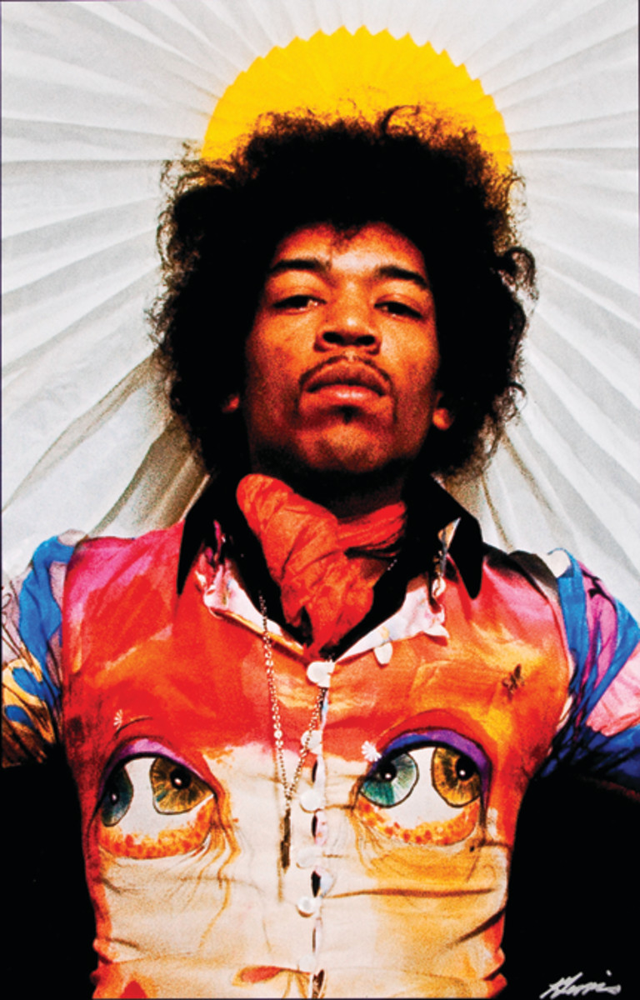
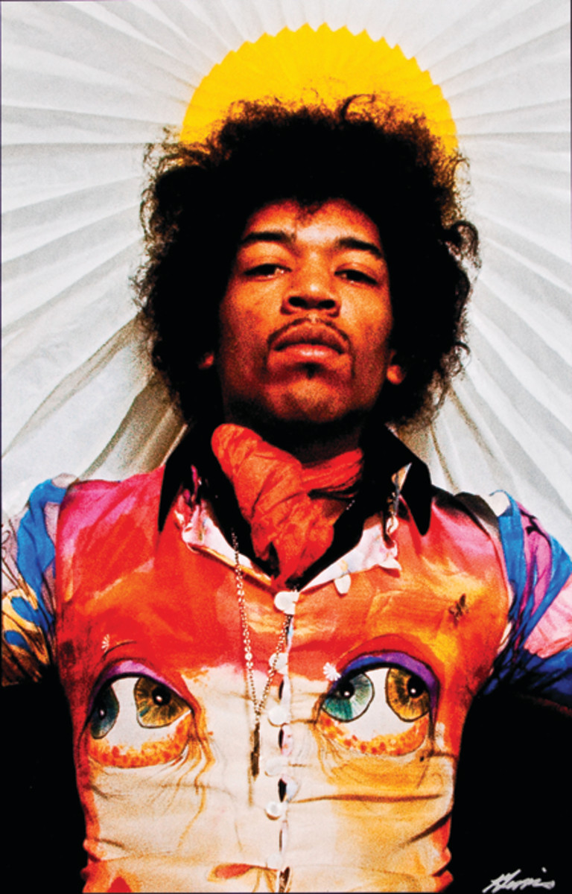

Jimi Hendrix
 

One of the Greatest Guitar Players Ever.
Down the street you can hear her scream "you're a disgrace"
As she slams the door in his drunken face,
And now he stands outside
And all the neighbors start to gossip and drool
He cries "Oh girl, you must be mad,
What happened to the sweet love you and me had?"
Against the door he leans and starts a scene,
And his tears fall and burn the garden green
And so castles made of sand,
Fall in the sea, eventually
A little Indian brave who before he was ten,
Played war games in the woods with his Indian friends,
And he built a dream that when he grew up,
He would be a fearless warrior Indian Chief
Many moons passed and more the dream grew stronger,
Until tomorrow, he would sing his first war song,
And fight his first battle, but something went wrong,
Surprise…